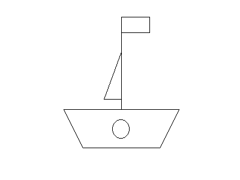

Data and Analysis Unit: EXE7
Last update: 2014-10-27 by Andy Wills
Description
Match-to-standards classification task with digit-counting concurrent load task,
reported in Wills et al. (2013, QJEP, Experiment 2).
This DAU contains stimulus files, raw data,
and an analysis script, in open
cross-platform formats (see the file format notes)
Citation
The APA-format citation for this resource is:
Wills, A.J. (2014). Data and Analysis Unit: EXE7. Retrieved from http://www.willslab.co.uk/exe7
If you make use of these resources, please drop me an email: andy@willslab.co.uk.
Resources
- exe7stim.tbz (30 KB) - Stimulus image files.
- exe5stimAudio.tbz (2.2 MB) - Audio files for concurrent load task (from EXE5 archive).
- exe7data.csv (181 KB) - Trial-level raw data. Column headings are as follows:
- cond: Experimental condition. "load" = Concurrent load, "noload" = No current load.
- subj: Participant number (unique within EXE7)
- phase: Experiment phase. "prac" = practice phase, "exp" = main phase.
- block: Experiment block (starts at zero for practice block)
- trial: Trial number (resets between blocks)
- stim: The to-be-classified stimulus presented, numbers refer to stimulus file names in exe7stim.tbz (in the
practice phase, this is set to zero).
- resp: Participant's classification response (A = category A, B = category B)
- rt: Participant's reaction time for classification response (in milliseconds)
- exe7report.csv (1 KB) - Summary of written report made by each participant at
end of experiment. In column 'report', 'ud' = unidimensional sort reported, 'os' = overall similarity sort reported,
'other' = other sort reported, 'changesort' = participant reported changing sort strategy during task, 'lost' = questionnaire
for this participant was lost. In column 'reportdim', for participants who reported a UD sort, this is the dimension(s) they
reported using.
- exe7analysis.R (3 KB) - R script for the analyses of Wills et al. (2013, QJEP).
Further resources
The following resources are not formally part of the archive, either because they do not use open formats,
or because they have not been thoroughly bug-checked, or both. They are provided in case others
find them useful, with absolutely no warranty!
- exe7eprimeMTS.tbz (18 KB) - Code for running the Experiment 2
match-to-standards task under
E-prime 2.0. Developed from original code used in experiment, which was E-Prime 1. This E-prime 2 version has not
been thoroughly bug-checked.
- exe5eprimeLoad.tbz (9 KB) - Code for running the
Experiment 1B concurrent load task under
E-prime 2.0 (from EXE5 archive). Developed from original code used in experiment, which was E-Prime 1. This E-prime 2 version has not
been thoroughly bug-checked. Requires audio files in exe5stimAudio.tbz to be extracted from that archive and
placed in same directory as ES2 file. Must be run on a different computer to exe5eprimeMTS.tbz, with a parallel port
connection between the two computers (MTS program starts and stops digit stream through this link).